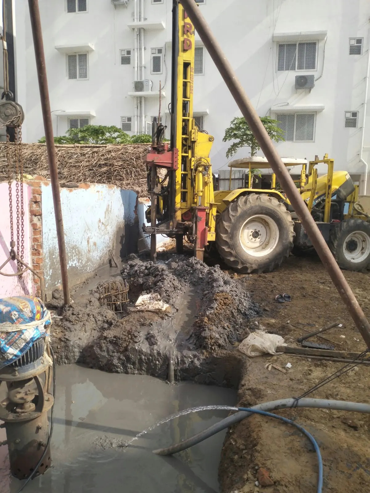
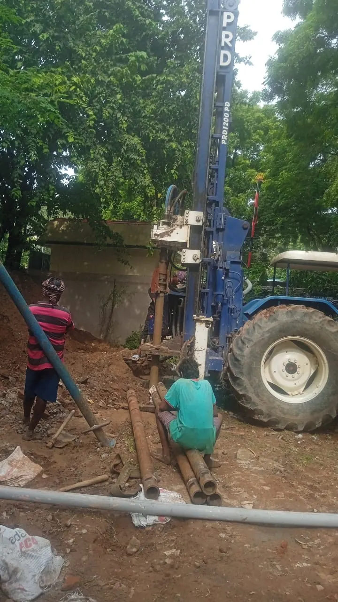
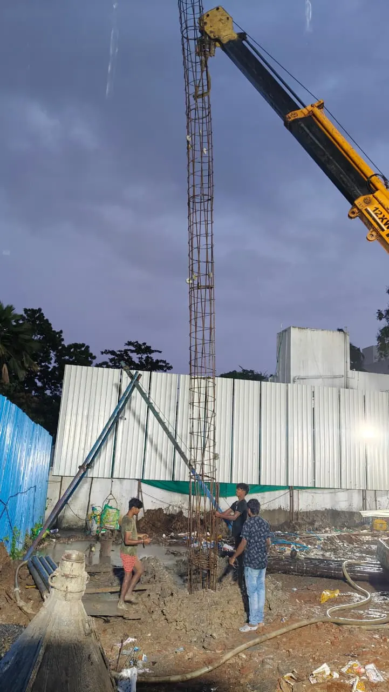
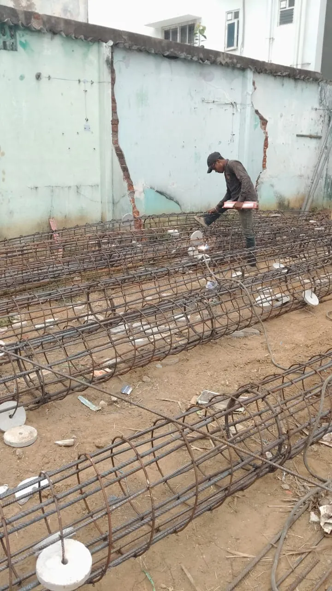
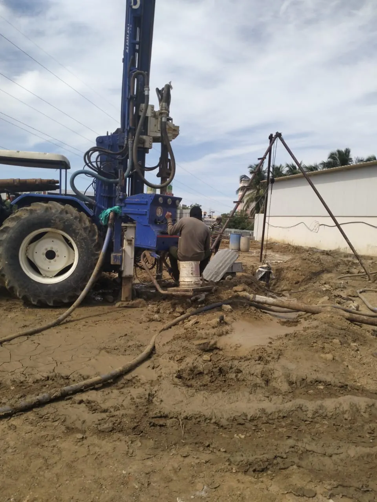
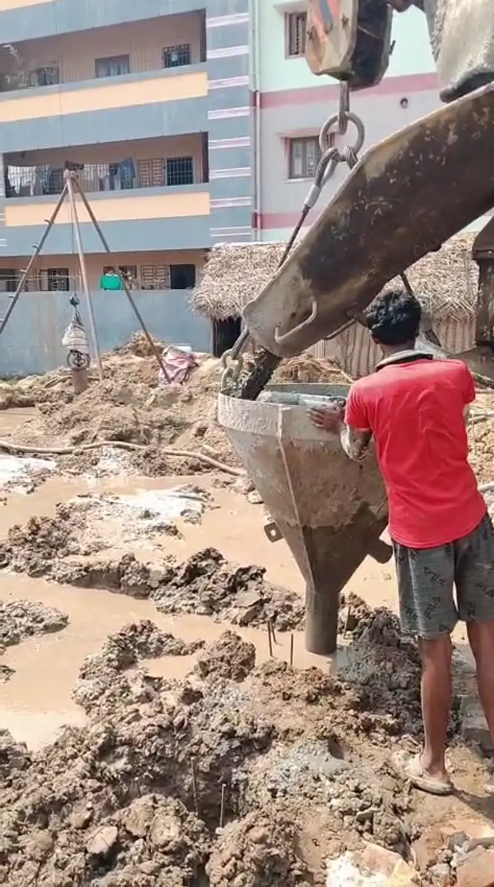

STRONG
GROUND.
BUILT FOR
TOMORROW.
Real ground conditions demand practical foundation solutions. Explore specialist piling and testing enquiries with Sun Pile Foundation, based in Chennai.
PILING • GROUND ENGINEERING • TESTING
Rotary & DMC piling enquiries
Method selection based on site needs
Tamil Nadu & India project enquiries
FOUR CORE SERVICES.
ONE STRONG START.
Four foundation and testing specialisms, presented through real construction photography and clear service information.
Cast-in-Situ Rotary Hydraulic Piles
Rotary boring for cast-in-situ reinforced concrete pile foundations.

02 / 04 DMC pilingBored Direct Mud Circulation (DMC) Piles
Bored piles installed with direct mud circulation for spoil removal.

03 / 04 Specialist foundationUnder-Reamed Piles
Pile foundation method with enlarged bulbs or bases where designed.

04 / 04 Pile testingPile Load Testing
Coordination of static pile load testing and site-side verification.
* Site photography illustrates construction activities; individual images do not certify a particular installation or test method. Final methods depend on approved engineering designs.
WORK THAT SPEAKS FOR ITSELF.
A closer look at the machinery, ground preparation and site activity in your uploaded photographs.

PHOTOGRAPHS PROVIDED FOR THIS WEBSITE • METHODS ARE SUBJECT TO SITE ENGINEERING AND APPROVAL
SEE ALL 54 PHOTOS ↗
REAL SITES.
REAL WORK.
Photos submitted for this website show machinery, concrete operations, reinforcement and site preparation.

BELOW GROUND
IS WHERE IT BEGINS.
From the first site discussion to the execution plan, the ground beneath a structure deserves careful attention.
We’re a Chennai-based foundation and piling business welcoming enquiries from builders, contractors, developers and project teams. We keep the conversation focused on soil conditions, drawings, access and the practical needs of the job.
Site access and engineering requirements come first.
Discuss machinery, working areas and mobilisation.
Share drawings and requirements before a quotation.
FROM FIRST CALL
TO GROUNDWORK.
A simple way to begin your foundation-related enquiry.
SHARE THE SITE
Tell us the location, access conditions, soil investigation information and foundation drawings where available.
DISCUSS THE METHOD
Outline the specified pile system, quantities, machinery access and any planned engineering tests.
REQUEST A QUOTE
Send your requirements by WhatsApp or email so the scope and feasibility can be reviewed.
SITE FOOTAGE.
NO STOCK VIDEO.
Watch on-site activity from the videos supplied with your website materials. Clips play only when selected.
WATCH SITE VIDEOS
GOOD PROJECTS
START WITH QUESTIONS.
A few answers before you send your enquiry.
What information is needed for a pile foundation quotation?
Please share the site location, contact details, approximate pile numbers and diameters, access photographs, drawings and soil investigation report where available. These help us discuss a scope-specific proposal.
Do you work only in Chennai?
Chennai is our contact base. We welcome enquiries across Tamil Nadu and other Indian locations, with mobilisation depending on project scope, site access and feasibility.
How is the right pile method selected?
The suitable foundation system should be chosen by the project’s qualified structural or geotechnical engineer based on site investigations, loads and design requirements. We can discuss the installation scope.
What is DMC piling?
Direct Mud Circulation is a bored piling approach that uses circulation of drilling fluid to carry excavated material out of the bore. Suitability varies by soil and ground conditions.
What is an under-reamed pile?
An under-reamed pile has one or more enlarged portions formed below ground, where specified by the engineer. The geometry and construction process are design-dependent.
Do you arrange pile load tests?
You can enquire about pile load testing through our contact team. Test type, loading protocol, equipment and acceptance criteria must be confirmed against approved project documentation.
Can I send site photos or drawings on WhatsApp?
Yes. Use the WhatsApp enquiry link to start a conversation, then attach your drawings, photos or soil report in WhatsApp if you wish.
Can I book a service directly through the website?
The website prepares a WhatsApp or email enquiry; it does not take online payment or automatically confirm a booking. A representative must review and confirm the project requirements.
STRONG WORK
BEGINS BELOW.
Tell us about your site, planned piling method or testing requirement. We can discuss the scope and available options.